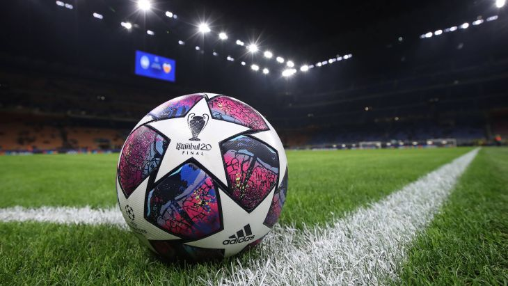

Что такое футбол ?
В даний час найпопулярніший і наймасовіший вид спорту в світі.
Це командний вид спорту, в якому метою є забити м'яч у ворота суперника
ногами або іншими частинами тіла (крім рук) більшу кількість разів, ніж команда суперника.
Є 17 правил гри, які є офіційними правилами. Кожне містить список керівних принципів і застережень. Правила застосовуються на всіх рівнях футболу, але деякі з них змінюються для певних категорій - жінки, юніори, люди з обмеженими можливостями. Публікуються правила в ФІФА - це абревіатура Міжнародної федерації футболу. Вона-міжнародний керівний орган в футболі.

Склад команди - це 11 гравців, запасні гравці не враховуються. Один з гравців є воротарем. Воротар - єдиний гравець, якому дозволяється грати руками, але за умови, що він буде це робити виключно в межах штрафного майданчика біля своїх воріт.
Матч-це окрема гра, що складається з 2 таймів, кожен по 45 хвилин. Між таймами завжди є пауза, тривалістю 15 хвилин. В цей час всі гравці відпочивають. А після закінчення паузи, за правилами, повинні помінятися воротами.
У тому випадку, якщо після закінчення 2 таймів команди заб'ють однакову кількість голів, то автоматично фіксується нічия. Тоді призначається додатковий час. Самий максимум додаткового часу - це два тайми по п'ятнадцять хвилин. Між додатковим і основним часом щогла обом командам надається перерва. Якщо після закінчення додаткового часу переможець так і не знайшовся, його визначають за допомогою серії пенальті. По воротах супротивника пробивають по 5 ударів, що здійснюються різними гравцями, з відстані 11 метрів.
Як і у всіх іграх включаючи футбол є тактика. Тактик бувають безліч і у кожної команди вона своя.Поскольку футбол гра командна, на перше місце висувається взаєморозуміння гравців, уміння вести грамотні спільні дії. Важливе значення при цьому має тактичну побудову гравців. Найпоширенішою тактичної схемою в сучасному футболі є гра з чотирма захисниками, чотирма півзахисниками і двома нападниками - 4-4-2. Схем існує велика кількість, проте саме поняття схеми, як і поняття амплуа гравців досить відносно. Залежно від кваліфікації гравців, їх обов'язки на полі можуть значно виходити за рамки амплуа. Так, часто за задумом тренера півзахисники, особливо крайні (а іноді навіть і крайні захисники) виконують роль нападників.